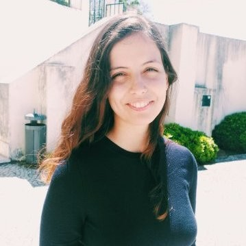
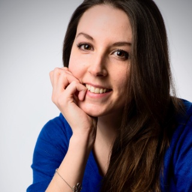
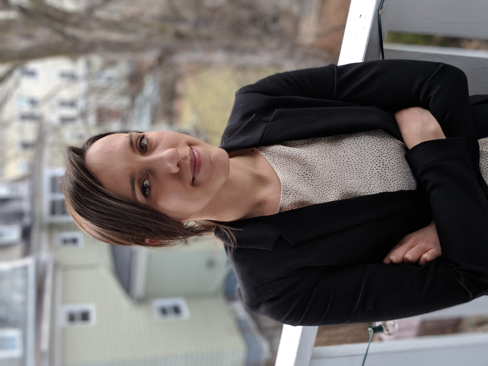
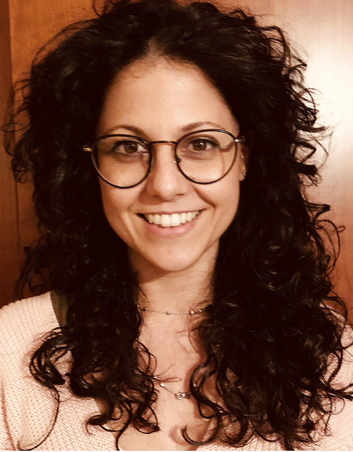
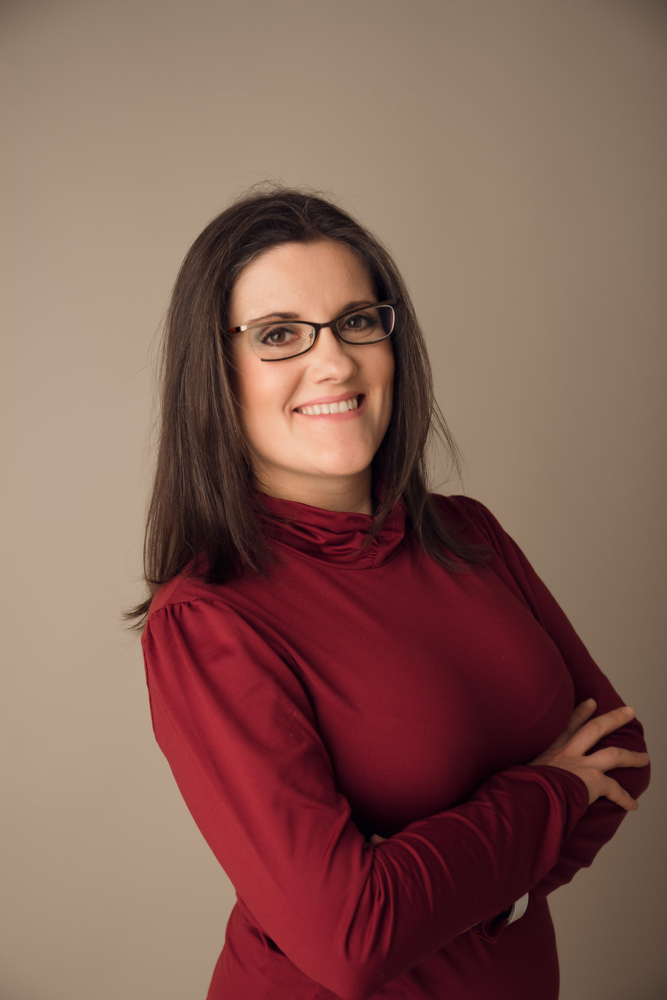

Gregory Fryns
Implementation
Gregory is a highly qualified computer science engineer with 10+ years experience in customer support and process improvement.
This project would not have been possible without the help of our contributors and sponsors. We are especially thankful to those who contributed on their spare time, simply to improve the visibility of women in neuroscience.
Implementation
Gregory is a highly qualified computer science engineer with 10+ years experience in customer support and process improvement.

Design
Laetitia is a freelance designer based in France. She creates visual identities, including logos, flyers, posters, websites, based on the unique needs of her clients. To find out more, see her portfolio at www.lbgraphiste.fra

Illustrations
Laura has worked as a data scientist, done data visualisations and science communication for the industry, international organisations and academia. Her freelance activities include workshops, training and consulting on data visualisation and scientific illustration.

Logo
Diana is a Graduate Student Researcher at Faculty of Sciences, University of Lisbon and has been working in a few projects as a Graphic Designer

Founder
Jessica graduated in Electrical Engineering from the University of Liège, Belgium. She studied the application of machine learning methods to neuroimaging data during her PhD (Belgium) and post-doctoral work (Stanford, USA and UCL, UK). She is now working in industry.
Machine Learning Research Scientist, London, UK
Jessica graduated in Electrical Engineering from the University of Liège, Belgium. She studied the application of machine learning methods to neuroimaging data during her PhD (Belgium) and post-doctoral work (Stanford, USA and UCL, UK). She is now working in industry.

PhD Candidate at University College London, London, UK
Fabio graduated in Biomedical Engineering at University of Coimbra, Portugal. His research interests lie on implementing and applying machine learning-based methods to multiple sources of data to identify biomarkers of mental health disorders and find reliable subgroups of patients.

Research fellow at INM-7 at the Forschungszentrum Jülich, Germany
Sarah has a background in clinical psychology, cognitive neuroscience and functional neuroanatomy. Her research aims to develop methods for studying and modelling the relationships between brain and behavior in large scale neuroimaging and behavioral data.

Research fellow at the Athinoula A. Martinos Center for Biomedical Imaging, USA
Aina is working on the development of methods for diffusion and functional MRI analysis. During her PhD at Inria (France), she developed statistical models for the analysis of BOLD and ASL task fMRI.

Postdoc at CIMeC in TheFairLab, Mattarello, Italy
Gabriella obtained her PhD at KULeuven in the Laboratory for Cognitive Neurology. Her primary research program focuses on the semantic representations of written words, spoken words and pictures in the human brain. By means of fMRI, she is currently investigating the role of the tasks in the semantic processing.

Postdoc at CIMeC in LDMg, Mattarello, Italy
Doris’s PhD work at the University of Milano-Bicocca investigated how and where rules are encoded in the human brain. As a postdoc, she employs fMRI and multivariate decoding to characterize neural representations of choice outcomes (previously rules) in both individual and social contexts.

Postdoctoral Researcher at NeuroSpin (Inria/CEA-Saclay), Paris, France
Ana Luisa graduated in Engineering Physics at Instituto Superior Técnico (ULisboa, Portugal). During her PhD at Karolinska Institutet (Stockholm, Sweden), she used fMRI to investigate the neural correlates involved in musical creativity. Now, she is developing a neuroimaging dataset to map cognition in the human brain
Marie Curie fellow at the Donders Institute for Brain, Cognition and Behaviour (Nijmegen, NL)
Eliana is interested in motivation and decision-making, and how the brain handles effortful and challenging situations. During her PhD and postdoc she has used neuroimaging (fMRI, fNIRS, EEG-fMRI), neurostimulation (TMS) and computational modelling to study the contribution of the prefrontal cortex to these processes. Currently, she works on translating neurocomputational models of motivation to neuropsychiatric populations